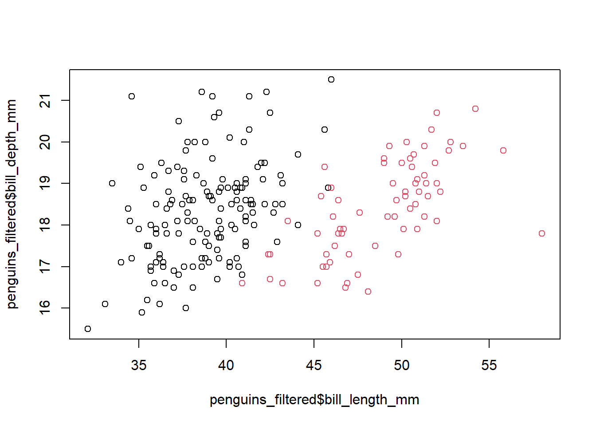

By the end of this session, you should be able to:
Effectively use Github Copilot in RStudio:
Configure RStudio to work with GitHub Copilot
Use comments and pseudocode to guide Copilot to assist with coding tasks
Leverage ChatGPT (or another Large Language Model) to assist with coding tasks:
Translate pseudocode into functional code
Comment existing code
Suggest improvements to code for performance or readability
Write unit tests for functions
Translate code from one language to another (e.g., R vs. Python)
We can use GitHub Copilot and/or Large Language Models like ChatGPT or Claude to help us write code in R, Python, or other languages, using natural language such as English. It might be handy to consider these as two different avenues of leveraging AI in coding:
Active coding support with GitHub Copilot: Copilot is like an assistant sitting next to you at your computer, writing code along with you, in real time - i.e., pair programming.
Iterative coding support with ChatGPT: ChatGPT is more like an assistant in the next office over, not writing code in real time with you, but collaborating through back-and-forth interactions and prompts.
1 Active coding support with GitHub Copilot
GitHub Copilot is an AI-powered code completion tool that helps you write code faster and with fewer errors. It is effectively “pair programming” where you and a partner (in this case, an AI partner) code together in real time. It is available as a plugin for IDEs such as Visual Studio Code and RStudio. Copilot is a large language model (LLM) related to ChatGPT, trained on GitHub and other codebases, and it can generate code completions in real time based on the context of your coding task. In this lesson, we will configure RStudio to work with GitHub Copilot and practice techniques to use Copilot effectively to assist with coding tasks.
If you have an education GitHub account (e.g., an .edu email address that is associated with your GitHub account), you should be able to get free access to Copilot Pro. Otherwise you can access a free but limited version of Copilot, which should be adequate for this session. See more Copilot requirements here.
Note
Here we will focus on using AI code completion tools in R and RStudio, since it is a popular language and IDE for ecologists, but the same methods work for other languages and IDEs. VS Code is a Microsoft product, as is Copilot (and GitHub for that matter), so its integration is even better than RStudio.
1.1 Configuring RStudio to work with GitHub Copilot
You need a fundamental understanding of coding to be able to use Copilot effectively. It can make intelligent guesses as to your intentions, but doesn’t necessarily know where your files are, or what you intend to do with the data. So it is helpful to guide Copilot in the right direction using comments, sentences, and “pseudocode” before you start any actual coding. The more information you provide through your Markdown text and code-chunk comments, the better Copilot will be able to help you.
TipPseudocode
Pseudocode is a way of planning out an analysis by writing out the sequence of steps you expect to take, in plain language, perhaps as bullet points. There are more formalized versions of pseudocode, and less formalized (see “vibecoding”) but here we take a middle road, and we will stick with just plain English sentences to communicate our intentions. Some tips:
Specify whether you want to use the tidyverse metapackage or base R functions (or another language, e.g., Python!).
If you know the names of certain functions, it is helpful to use those in your pseudocode, to help Copilot incorporate those into its code completions.
Use comments to signal to Copilot what you’d like to do at each step.
ExerciseExercise 1
Create a code chunk, read in some data, do some data wrangling, and then make a plot with the resulting data. Use comments in your code chunk to signal to Copilot what you’d like to do at each step. Here are the steps we will do, using a tidyverse workflow:
load the palmerpenguins package and load the penguins data
drop any incomplete observations (any NA values)
filter to just keep the Chinstrap and Adelie species
generate a scatter plot of bill length vs. bill depth for each species
then, for the two species, run a t-test to determine whether the bill lengths are statistically different between the two species. Print a summary of the t test results.
(Copy the above text and paste into a Quarto document, or rephrase it in your own words, then create a code chunk and let Copilot suggest some code!)
AnswerAnswer
Here’s what it looked like when I let Copilot help me write the code - I accepted each line by pressing “tab”. This might change entirely if I ran the exercise again.
How different does it look from the code you wrote?
How does it differ from how you might code it on your own?
Warning: package 'ggplot2' was built under R version 4.3.3
Warning: package 'tidyr' was built under R version 4.3.3
Warning: package 'readr' was built under R version 4.3.3
Warning: package 'purrr' was built under R version 4.3.3
Warning: package 'stringr' was built under R version 4.3.3
Warning: package 'lubridate' was built under R version 4.3.3
── Attaching core tidyverse packages ──────────────────────── tidyverse 2.0.0 ──
✔ dplyr 1.1.2 ✔ readr 2.1.5
✔ forcats 1.0.0 ✔ stringr 1.5.1
✔ ggplot2 3.5.1 ✔ tibble 3.2.1
✔ lubridate 1.9.3 ✔ tidyr 1.3.1
✔ purrr 1.0.2
── Conflicts ────────────────────────────────────────── tidyverse_conflicts() ──
✖ dplyr::filter() masks stats::filter()
✖ dplyr::lag() masks stats::lag()
ℹ Use the conflicted package (<http://conflicted.r-lib.org/>) to force all conflicts to become errors
Warning: package 'palmerpenguins' was built under R version 4.3.3
Welch Two Sample t-test
data: bill_length_mm by species
t = -21.712, df = 108.17, p-value < 2.2e-16
alternative hypothesis: true difference in means between group Adelie and group Chinstrap is not equal to 0
95 percent confidence interval:
-10.92365 -9.09605
sample estimates:
mean in group Adelie mean in group Chinstrap
38.82397 48.83382
estimate
estimate1
estimate2
statistic
p.value
parameter
conf.low
conf.high
method
alternative
-10.00985
38.82397
48.83382
-21.7125
0
108.1722
-10.92365
-9.09605
Welch Two Sample t-test
two.sided
ExerciseExercise 2
Let’s try the same exercise but this time let’s only use base R functions:
load the palmerpenguins package and load the penguins data
drop incomplete observations
filter to just keep the Chinstrap and Adelie species
generate a scatter plot of bill length vs. bill depth for each species
then, for the two species, run a t-test to determine whether the bill lengths are statistically different between the two species. Print a summary of the t test results.
(Below the previous code chunk, in a Markdown section, copy and paste the above text, or simply write a sentence along the lines of “Repeat the previous analysis using only base R functions and plotting.” Then create a new code chunk and let Copilot suggest code for you.)
AnswerAnswer
Here is what Copilot came up with for me. Note, it knew from above that I wanted to use base R functions this time instead of tidyverse functions!

Length Class Mode
statistic 1 -none- numeric
parameter 1 -none- numeric
p.value 1 -none- numeric
conf.int 2 -none- numeric
estimate 2 -none- numeric
null.value 1 -none- numeric
stderr 1 -none- numeric
alternative 1 -none- character
method 1 -none- character
data.name 1 -none- character
WarningCopilot limitations!
Copilot cannot read your mind, and it may make incorrect assumptions about what you want to do with your data and analysis. It is important to understand the code that Copilot is generating for you, and to check it for errors!
Copilot can only add code or text; it cannot subtract or edit buggy or incorrect code or text without specific prompting from the user.
You can always reject Copilot’s suggestions and write your own code, or accept its suggestions as a starting point then edit them as you see fit before moving on.
You get the last word (no matter how hard Copilot tries!), and you as the coder are responsible for the final product.
1.3 Using Copilot for more complex coding tasks
Copilot can also help you write functions and loops, among other things.
1.3.1 Copilot to write a function
ExerciseExercise 3
Let’s write a function that takes a dataframe of data and for two given columns, calculates the slope, intercept, and p value for a linear regression model. Let’s call it calc_lm(). Some pseudocode to get you started:
identify and pull out the y (outcome) and x (predictor) variables as columns in the data frame
perform a linear regression on y ~ x
return the slope, intercept, and p value in a dataframe.
(Feel free to copy the above text and paste into a Markdown section of your Quarto document, then let Copilot make its suggestions)
AnswerAnswer
Here’s what Copilot suggested for me, line by line, as I was writing this lesson. After finishing the function, I started writing a comment to test, it assumed I wanted to use data that I had mentioned earlier in the script, i.e., penguins_filtered.
# function to calculate slope, intercept, and p value for a linear regression modelcalc_lm <-function(data, y, x) {# identify and pull out the y (outcome) and x (predictor) variables as columns in the data frame y <- data[[y]] x <- data[[x]]# perform a linear regression on y ~ x lm_model <-lm(y ~ x, data = data)# return the slope, intercept, and p value in a dataframedata.frame(slope =coef(lm_model)[2],intercept =coef(lm_model)[1],p_value =summary(lm_model)$coefficients[2, 4])}### test on the penguins datacalc_lm(penguins_filtered, "bill_length_mm", "bill_depth_mm")
Does Copilot’s suggestion work for you? If not take a moment to fix it and make it work. For me, it created a perfectly good function the first time. Some observations on the code presented here:
I would have avoided overwriting the local value of x and y in the function, as it could be confusing.
Note that the p value it selects from the linear model is that of the slope, not the intercept. That is probably what we wanted, but would be a good idea to make sure that meets our expectations!
I might also prefer to have the output in a different format, perhaps using broom::tidy().
1.3.2 Copilot to write a loop
ExerciseExercise 4
Now let’s get Copilot to help use the previous function to iterate over the various species by sex. Using for-loops, this will involve nested loops (one for species, one for sex), so let’s see if Copilot can figure that out! Pseudocode:
For each species, and each sex, apply the function above to the penguins data, and add the species and sex to the resulting dataframe.
Store the results in a list of dataframes
Then combine the results into a single dataframe.
(Again, copy the text above and paste into a Markdown section, open a new code chunk and let Copilot make suggestions. It may struggle with this, so if it gets stuck, help it by writing some code or comments)
Warning
I almost certainly wouldn’t have actually used a for loop here in the first place - better options would be a group_by() %>% summarize() workflow or purrr::map2 - but we’re just trying to see what Copilot can do with a more complex coding task!
AnswerAnswer
Here’s what Copilot suggested, based on the pseudocode and previous code chunks. However, this was a little more complex and required some guidance, hand holding, and bug-fixing.
# create an empty list to store the results1results <-list()2i <-1# iterate over the speciesfor (species inunique(penguins_filtered$species)) {# iterate over the sex3for(sex inunique(penguins_filtered$sex)) {# apply the function above to the penguins data4 result <-calc_lm(penguins_filtered[penguins_filtered$species == species & penguins_filtered$sex == sex, ], "bill_length_mm", "bill_depth_mm")# add the species and sex to the resulting dataframe result$species <- species5 result$sex <- sex# store the results in the list6 results[[i]] <- result7 i <- i +1 }}# combine the results into a single dataframeresults_df <-do.call(rbind, results)
1
Copilot didn’t pre-allocate space for the list based on the number of expected entries. Not a dealbreaker for a small project, but generally a good idea.
2
After Copilot started the loop, it didn’t include an indexing variable, and hadn’t considered that the “species” index would be character, not numeric, so would be challenging to use as an indexing variable after the fact. I manually added in an index i to keep track of the list index.
3
Copilot struggled with this nested loop format - so I had to manually start typing this line; but then Copilot was able to finish.
4
Again, Copilot struggled here - it wrote the function call halfway through the filtered step; when I wrote the penguins_filtered$sex == sex part, it was able to finish the line. However, it made some errors finishing the line as well!
5
Once again, Copilot wasn’t sure how to add the sex info to the resulting dataframe, so I had to manually start writing.
6
Here, Copilot used a single bracket for indexing, which is incorrect for a list in R. I had to manually change this to double brackets.
7
Copilot didn’t include an incrementing index variable, so I had to manually add this.
In summary, Copilot was helpful in getting the ball rolling here, but needed lots of manual help. Additionally, it made some choices I probably would have made differently - e.g., I probably would have filtered the penguins_filtered dataframe before the calc_lm call, and probably would have used dplyr::mutate to add the species and sex columns to the result. Finally, I probably would have used bind_rows() instead of do.call(rbind, results) to combine the results, but that’s just what I’m used to.
1.4 Copilot for coding: summary
Copilot can be very helpful at speeding up your coding, especially for simple or well-defined tasks. One potential pitfall is that using Copilot in this way has a certain amount of path dependency. Once a bit of code is written in the script, Copilot takes that as given - it can’t modify or erase existing code, it can only keep going forward by adding.
In the next section, we’ll look at how to use ChatGPT to help with coding in a more interactive/iterative fashion, which can avoid path dependency but may introduce other complexities.
TipSummary: Copilot tips
Before starting your analysis, prime Copilot by writing out an overview of your analysis, including packages, functions, and statistical tests you want to do.
While writing code, if Copilot gets stuck, or treads down an unproductive path, you have several options:
write out a comment or additional pseudocode to guide Copilot in the right direction.
accept Copilot’s suggestion (if it’s on the right track) and manually fix it before continuing.
reject Copilot’s suggestion (if it’s way off base) and write your own code, to signal what you really want
Run the code to make sure it works as expected, and check for errors. You are responsible for the final result.
Remember, you can turn Copilot off entirely, or set it to autocomplete only when requested:
Tools –> Global Options –> Copilot –> Show Copilot code suggestions: Manually (Ctrl-Backslash)).
2 Iterative coding support with ChatGPT
In this section we’ll look at using ChatGPT outside of RStudio. Here we can take existing code and feed it into ChatGPT and ask it to help us with various tasks, or feed pseudocode into ChatGPT and ask it to generate code for us. Rather than line by line, like Copilot, an LLM can often provide a more complete solution that can then be copied/pasted back into RStudio. It can also iterate through multiple rounds of conversation/prompts.
2.1 Pseudocode into code
Just as Copilot can generate code from pseudocode, ChatGPT can do the same. You can then copy/paste the results into RStudio.
ExerciseExercise 5
Let’s give ChatGPT the same sequence of steps we used above. We will copy and paste the pseudocode from above (repeated here) into ChatGPT and ask it to generate code for us.
load the palmerpenguins package and load the penguins data
drop any incomplete observations (any NA values)
filter to just keep the Chinstrap and Adelie species
generate a scatter plot of bill length vs. bill depth for each species
then, for the two species, run a t-test to determine whether the bill lengths are statistically different between the two species. Print a summary of the t test results.
AnswerAnswer
Here is the code it generated for me. Note it chose a (mostly) tidyverse approach this time, though I didn’t explicitly prompt it to do so:
# Load necessary packageslibrary(palmerpenguins)library(ggplot2)library(dplyr)# Load the penguins dataset and remove incomplete observationspenguins_clean <- penguins %>%na.omit() %>%filter(species %in%c("Chinstrap", "Adelie"))# Generate scatter plot of bill length vs. bill depthggplot(penguins_clean, aes(x = bill_length_mm, y = bill_depth_mm, color = species)) +geom_point() +labs(title ="Bill Length vs. Bill Depth",x ="Bill Length (mm)",y ="Bill Depth (mm)") +theme_minimal()# Perform a t-test on bill length between Chinstrap and Adelie speciest_test_result <-t.test(bill_length_mm ~ species, data = penguins_clean)# Print summary of t-test resultsprint(t_test_result)
This code works exactly as desired, though we set it to not evaluate here in the script, for sake of space.
ExerciseExercise 6
I could follow up with a request to not use any tidyverse packages…
AnswerAnswer
And this is what it came up with:
# Load the palmerpenguins packagelibrary(palmerpenguins)# Load the dataset and remove incomplete observationspenguins_clean <-na.omit(penguins)# Keep only Chinstrap and Adelie speciespenguins_clean <- penguins_clean[penguins_clean$species %in%c("Chinstrap", "Adelie"), ]# Generate scatter plot of flipper length vs. bill depthplot(penguins_clean$bill_length_mm, penguins_clean$bill_depth_mm,col =ifelse(penguins_clean$species =="Chinstrap", "blue", "red"),pch =19,xlab ="Bill Length (mm)",ylab ="Bill Depth (mm)",main ="Bill Length vs. Bill Depth")legend("topright", legend =c("Chinstrap", "Adelie"), col =c("blue", "red"), pch =19)# Perform a t-test on flipper length between Chinstrap and Adelie speciest_test_result <-t.test(bill_length_mm ~ species, data = penguins_clean)# Print summary of t-test resultsprint(t_test_result)
This code works exactly as desired, though we set it to not evaluate here in the script, for sake of space.
2.2 Commenting existing code
Often when we are trying to code, we Google to find a solution online (e.g., Stack Overflow), but the code is not familiar to us or difficult to understand. ChatGPT can take that code and insert helpful comments to explain what each line is doing.
ExerciseExercise 7
Here is a complex Python script that would be challenging to understand for someone not proficient in Python:
Here’s what it came up with! Try asking ChatGPT to comment for you as if you were completely new to Python and see how it changes.
#| eval: falseimport argparse # For parsing command-line argumentsimport glob # For file pattern matchingimport logging # For logging messagesimport os # For operating system interactionsimport time # For measuring execution timeimport re # For regular expressionsimport warnings # For handling warningsfrom transformers import pipeline # For using Hugging Face's transformers pipelineimport torch # For PyTorch operations# Suppress specific UserWarnings from torch.utils.datawarnings.filterwarnings("ignore", category=UserWarning, module="torch.utils.data")# Configure logging settingslogging.basicConfig( level=logging.DEBUG,format=('%(asctime)s (%(relativeCreated)d) %(levelname)s%(name)s'' [%(funcName)s:%(lineno)d] %(message)s' ))logging.getLogger('taskgraph').setLevel(logging.INFO)LOGGER = logging.getLogger(__name__)def main():# Check if CUDA (GPU support) is available and print the resultprint(torch.cuda.is_available())# Set up argument parser for command-line inputs parser = argparse.ArgumentParser(description='Affiliation classifier') parser.add_argument('bib_file_pattern', help='path to bibliography list') parser.add_argument('abstract_tag_file', help='path to abstract tags') parser.add_argument('--target_path', help='target classified table') args = parser.parse_args()# Load bibliography files matching the given patternprint('load bib_file') affiliation_set =set() article_count =0for bib_file in glob.glob(args.bib_file_pattern):withopen(bib_file, 'r', encoding='utf-8') asfile: affiliation_str =None abstract_str =None article_id =Nonefor line infile:try:# Extract article ID using regex article_id = re.search('@[^{]+{(.*),', line).group(1)if article_id isNone:print(f'ERROR: {line}') affiliation_str =None abstract_str =Nonecontinueexcept:pass# Extract abstract contentif'abstract ='in line: abstract_str = re.search('{(.*)}', line).group(1)# Extract affiliations contentelif'affiliations ='in line: affiliation_str = re.search('{(.*)}', line).group(1)# If both abstract and affiliation are found, add to the setif abstract_str and affiliation_str:if article_id isNone:print(f'ERROR: {abstract_str}') affiliation_set.add((article_id, affiliation_str, abstract_str)) article_count +=1# Reset variables for the next article article_id =None affiliation_str =None abstract_str =None# Load candidate labels from the abstract tag fileprint('load candidate_labels')print(f'article count: {article_count} vs {len(affiliation_set)}')withopen(args.abstract_tag_file, 'r') asfile: candidate_labels =', '.join([v for v infile.read().split('\n') iflen(v) >0])print(candidate_labels)# Initialize the zero-shot classification pipeline batch_size =10 classifier = pipeline("zero-shot-classification", model="MoritzLaurer/DeBERTa-v3-base-mnli-fever-anli", device=0, # Use GPU if available batch_size=batch_size, truncation=True )print(classifier.model.device)# Determine the target path for the output target_path = args.target_pathif target_path isNone: target_path ='%s_classified%s'% os.path.splitext(args.affiliation_pickle_list) total_time =0 events =0# Open the target file for writing the classification resultswithopen(target_path, 'w', encoding='utf-8') asfile:print(f'opening {target_path} for writing {len(affiliation_set)} affiliations') start_time = time.time()# Generator function to yield affiliation stringsdef affiliation_generator():for _, affiliation_str, _ in affiliation_set:yield affiliation_str index =1# Perform classification and write resultsfor (article_id, affiliation_str, abstract_str), result inzip( affiliation_set, classifier(affiliation_generator(), candidate_labels, multi_label=True) ):file.write(f'{article_id}\n{affiliation_str}\n{abstract_str}\n')for label, score inzip(result['labels'], result['scores']):file.write(f'{label}: {score}\n')file.write('\n')file.flush() current_time = (time.time() - start_time) events +=1 total_time += current_timeprint(f'({index}/{len(affiliation_set)}) took {current_time}s to tag {article_id} 'f'(time left: {total_time/events*(len(affiliation_set)-index)})') start_time = time.time() index +=1if__name__=='__main__': main()
Not only does ChatGPT comment the code for me, it also gives an overview of the script at the end. I did not notice any changes to the code, except for the removal of some lines of code that had been commented out in the original (and were thus not functional). But it would be important to verify functionality of the updated code!
2.3 Suggesting improvements to code (refactoring)
Often we have a piece of code we’ve written, or borrowed from somewhere else, but it is slow or hard to read, and we want to improve it (“refactoring”). Perhaps we want to take a repeated process and streamline it or parallelize it across multiple processors. ChatGPT can help with this as well.
TipStart a new chat or continue with existing chat?
Since we’ve already chatted with the LLM, if we continue in the same conversation it will “remember” the previous context. But perhaps we want to start fresh on a new problem.
For example, if I asked ChatGPT to comment the previous code as if I were a novice in Python, it may continue to assume I’m a novice for future questions, which may produce overly simplified or verbose responses. This might call for a new chat.
Alternately, if I tried a bit of suggested code and encountered an error, I can paste that error back into the same conversation and ask ChatGPT to alter its suggestion accordingly. This would not be effective if I started a new chat.
ExerciseExercise 8
Let’s ask ChatGPT to take the nested for-loop above (a functional but not particularly elegant piece of code) and ask ChatGPT to recommend improvements.
AnswerAnswer
Before offering refactored code, it offered some tips, quoted here:
Your code is functional, but it can be improved for efficiency and elegance. Here are some suggested improvements:
Key Enhancements:
Avoid explicit indexing (i <- 1): Instead of manually managing an index for the list, you can use append() or lapply().
Use split() + lapply(): This avoids explicit for loops and makes the code more concise and efficient.
Use bind_rows() from dplyr: Instead of do.call(rbind, results), dplyr::bind_rows() is faster and more readable.
Note that I didn’t show ChatGPT the rest of my script, including the part where I suggested bind_rows()… glad it came up with that on its own!
Here’s the refactored code it suggested:
library(dplyr)# Function to apply calc_lm across groupsresults_df <- penguins_filtered %>%split(list(.$species, .$sex), drop =TRUE) %>%# Split by species and sexlapply(function(df) { result <-calc_lm(df, "bill_length_mm", "bill_depth_mm") # Apply function result$species <-unique(df$species) # Add species info result$sex <-unique(df$sex) # Add sex inforeturn(result) }) %>%bind_rows() # Combine into a single dataframe
The results are functionally identical (though some unimportant differences in format - e.g., the order of rows, or the row names).
2.4 Writing unit tests
When writing functions, it is good practice to write unit tests to ensure that the function works as expected. A unit test is a bit of code that verifies the accuracy of a small, isolated block of application code (i.e., a small function). Typically they run a function with known inputs and test to make sure the outputs match expectations. ChatGPT can help you write unit tests for your functions, which can be especially helpful if you are not familiar with them.
ExerciseExercise 9
Let’s ask ChatGPT to write a unit test for our calc_lm() function. This is a simple function that takes two vectors of data, runs a linear regression, and reports the slope, intercept, and p value.
AnswerAnswer
Here is what ChatGPT suggested:
library(testthat)# Load the function (if not already sourced)# source("your_script.R")# Create a test datasettest_data <-data.frame(x =c(1, 2, 3, 4, 5),y =c(2, 4, 6, 8, 10) # Perfect linear relationship (y = 2x))test_that("calc_lm computes correct slope, intercept, and p-value", { result <-calc_lm(test_data, "y", "x")# Expected values expected_slope <-2# Since y = 2x expected_intercept <-0# No intercept expected_p_value <-2.2e-16# Should be very close to zero due to perfect correlation# Check if slope and intercept are as expectedexpect_equal(result$slope, expected_slope, tolerance =1e-6)expect_equal(result$intercept, expected_intercept, tolerance =1e-6)# Check if p-value is very small (indicating strong statistical significance)expect_lt(result$p_value, 0.05)})
This uses the testthat package, designed specifically for unit testing. It creates a test dataset with a perfect linear relationship, feeds it into the function, and compares the output values to our expectations. It is a good start, but when running it, there is an unexpected snag. The test doesn’t take into account that summary() on a perfectly linear relationship throws a warning, causing the unit test to fail. We could easily adjust the test to account for this, e.g., by adding a little noise into the test data to make it not perfectly linear, but the important thing is that we as the coder must verify that the code works as expected.
Just to see what would happen, I told ChatGPT about the warning:
And it adjusted the unit test to incorporate a small amount of noise, just as I would have done!
library(testthat)# Load the function (if not already sourced)# source("your_script.R")# Create a test dataset with slight randomness to avoid perfect collinearityset.seed(123) # For reproducibilitytest_data <-data.frame(x =c(1, 2, 3, 4, 5),y =c(2, 4, 6, 8, 10) +rnorm(5, mean =0, sd =0.1) # Adding slight noise)test_that("calc_lm computes correct slope, intercept, and p-value", { result <-calc_lm(test_data, "y", "x")# Expected values (approximately) expected_slope <-2 expected_intercept <-0# Check if slope and intercept are close to expected valuesexpect_equal(result$slope, expected_slope, tolerance =0.1)expect_equal(result$intercept, expected_intercept, tolerance =0.1)# Check if p-value indicates strong statistical significanceexpect_lt(result$p_value, 0.05)})
2.5 Translating code from one language to another
If you are proficient in one language but not another, ChatGPT can help you translate code from one language to another. This can be especially helpful as you are learning a new language, or if some functionality available in an unfamiliar language is not available in your preferred language.
ExerciseExercise 10
Let’s try giving ChatGPT the nested loop code again, but this time ask to translate to Python.
AnswerAnswer
Here’s what it returned for me, nearly a line-by-line translation with a note: “Here’s the equivalent Python code using pandas and list comprehensions for efficiency.”
However, note that the code is not stand-alone, since it calls the function calc_lm() that we defined previously but in R, and calls for the penguins_filtered object which has not yet been loaded and filter in Python. But those can be fixed pretty easily! (e.g., ask ChatGPT to rewrite calc_lm in Python, and suggest code for loading/filtering the penguins data in Python).
#| eval: falseimport pandas as pd# Create an empty list to store resultsresults = []# Iterate over speciesfor species in penguins_filtered['species'].unique():# Iterate over sexfor sex in penguins_filtered['sex'].unique():# Filter the DataFrame for the specific species and sex subset = penguins_filtered[(penguins_filtered['species'] == species) & (penguins_filtered['sex'] == sex)]# Apply the function to the filtered data result = calc_lm(subset, "bill_length_mm", "bill_depth_mm")# Add species and sex information result['species'] = species result['sex'] = sex# Append the result to the list results.append(result)# Combine the results into a single DataFrameresults_df = pd.concat(results, ignore_index=True)
After the code, it listed some changes/improvements it made, as well, which is helpful.
And as long as we’re here, let’s ask it to refactor this code in Python instead of R:
AnswerAnswer
And again, it provided a little context, and some nice tidy code (with the same limitations noted above). Note this refactored version in Python looks pretty different from the refactored version in R, but shares some functional similarities.
#| eval: falseimport pandas as pd# Define a function to process each groupdef process_group(group): result = calc_lm(group, "bill_length_mm", "bill_depth_mm") # Apply function result["species"] = group["species"].iloc[0] # Assign species result["sex"] = group["sex"].iloc[0] # Assign sexreturn result# Apply function across groups and combine resultsresults_df = pd.concat( [process_group(group) for _, group in penguins_filtered.groupby(["species", "sex"])], ignore_index=True)
2.6 Summary: ChatGPT for coding
TipSummary: ChatGPT tips
ChatGPT can provide coding support by:
generating code from pseudocode
commenting existing code
suggesting improvements to code (refactoring)
translating code from one language to another
As with Copilot, when you provide more context to ChatGPT (as pseudocode, example code, desired packages, etc), you will get better results
As with Copilot, you are responsible for the final product. Test the code, check for errors, and make sure it works as expected!
3 Conclusions
In this lesson we’ve introduced you to two different tools for leveraging generative AI tools to boost your coding practice. We encourage you to try out both tools and approaches, and mix and match to see what works best for you.
4 Further considerations
What about hallucinations and errors?
LLMs and generative AI are known to “hallucinate” and make up incorrect information from time to time. In coding, this may be less of an issue, since you can run the code to test it and verify that the results match expectations.
However, if you are asking an LLM to code something that you don’t fully understand, you may not recognize errors or incorrect results. It might be risky to ask an LLM to write code for you that you wouldn’t be able to write yourself if given the time.
LLMs are essentially trying to provide the most likely completion to a given prompt, i.e., the least surprising answer. For creative writing tasks, this can result in pretty mediocre and predictable prose. But for a highly structured task like coding, surprise is not the goal! An LLM trained on a massive code base will have a pretty good idea of the most common - and least surprising - ways to approach a typical coding problem.
What about ethics?
LLMs and generative AI are trained on large datasets, often including content scraped from artists and writers (and coders) without their consent. This raises ethical concerns about the use of generative AI for creative tasks, for plagiarism and exploitation of writers’ work and for the potential for putting artists out of work. For coding tasks this may be less of an issue, as much of the codebase is open source, e.g., public repos on Github or Q&A on Stack Overflow, though even open source material is often licensed with rules for attribution that may be violated by AI-generated code.
While an LLM doesn’t ingest the data or information you put into your prompts (once it is trained, it can’t learn new things), it is still important to consider security and privacy risks. Including sensitive or private information in a prompt may result in some of that sensitive information being exposed in the resulting code. If you are coding an analysis that requires privacy or security, the LLM may not properly understand those privacy or security concerns and could generate code with security liabilities.
Will this be problematic for the future of coding?
Definitely! With such tools readily at hand, then students won’t learn how to properly code - they will just have to rely on LLMs to do everything for them. Additionally, if a senior analyst can use an LLM to write code, they won’t need to hire junior analysts, thus breaking the pipeline for entry level coding jobs.
Certainly not! With such tools readily at hand, the barrier to entry for coding is lowered. Consider that we’ve progressed from punch cards to binary to assembly language to FORTRAN to COBOL to C to R to Python to RStudio to Jupyter notebooks to LLMs. Each step has made coding more human readable and comprehensible, and yet we still have demand for coders. Instead of coding in R or Python (or binary), we’ll soon be coding in English (or Spanish, Chinese, etc). Coding will no longer be a barrier to statistical analysis, so junior and senior analysts can focus on the science!
{kind=link}